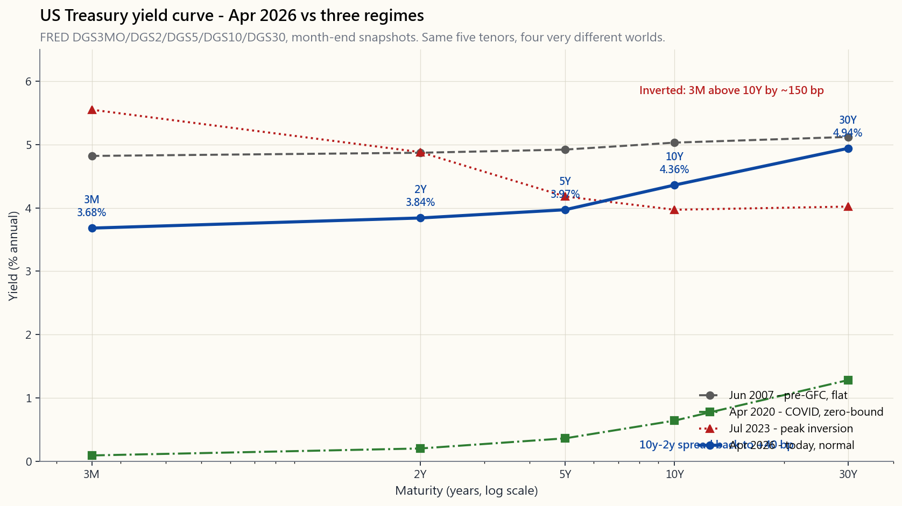
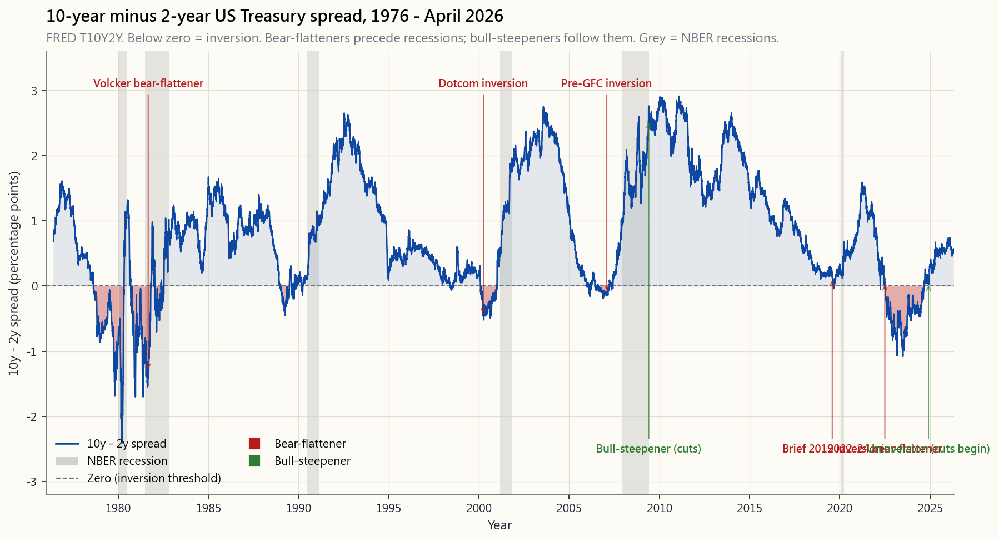

Week 31: Yield Curves — Shape, Level, Slope, Curvature
1. Why This Is Important
The yield curve is the single chart that, more than any other, tells you what the bond market thinks. It is the price of money for every maturity from one day to thirty years, drawn as a line. Its level prices every mortgage and every corporate bond. Its slope prices every recession probability the market is willing to bet on. Its curvature prices the path of Fed policy. About 95% of all the variance in how the curve moves can be summarised in three numbers.
You need to read this chart for four reasons.
sit a couple of points above the 10-year. Investment-grade corporate bonds sit one to two points above the matched-maturity Treasury. High-yield credit sits four to six points above. If you understand the Treasury curve, you understand the price of credit risk in the entire economy because every other yield is a spread over it.
most of them — every single one. The 2y/10y spread inverted in July 2022, stayed inverted for over two years, and uninverted in late 2024. By the textbook playbook a recession should have followed within 6 to 24 months. Whether or not it did, an investor who could read this chart in 2022 had cleaner hands than one who could not.
component analysis on Treasury yields decomposes the curve into level (parallel shifts, ~70% of variance), slope (steepening or flattening, ~20%), and curvature (the belly versus the wings, ~5%). Every interest-rate trade you will ever see — duration bets, steepeners, butterflies — maps cleanly onto these three factors.
forward rate two years out is what the curve is pricing for the short rate two years from today. If you have a different view, you have a tradeable view. If you have the same view, you do not. Reading forwards turns the curve into a probability distribution over future Fed policy.
This lesson covers construction (par/spot/forward), the three PCA factors, the regime taxonomy (bull-flattener/bear-steepener and the two "wrong" cousins), butterfly trades on curvature, and the April 2026 curve in context.
2. What You Need to Know
2.1 What the Curve Is, Exactly
A yield curve is a graph of yield versus maturity for a set of bonds of equivalent credit quality. The Treasury curve is the canonical example because the credit risk is constant (zero, by US convention) and the only thing varying is time-to-maturity.
The five tenors that get watched are 3-month, 2-year, 5-year, 10-year,
and 30-year. Their FRED ticker family is DGS3MO, DGS2, DGS5,
DGS10, DGS30. The 3-month sits closest to the Fed funds rate. The
2-year reflects expected Fed policy over the next two years. The 10- and 30-year embed everything from inflation expectations to term premium to global savings flow.

Read the chart left to right. The 2007 curve is nearly flat — that flatness was the warning bell before the GFC. The 2020 curve is pinned near zero across the front because the Fed hit the lower bound. The 2023 curve is inverted: the 3-month is above the 10-year by more than 150 basis points, the deepest inversion since Volcker. The April 2026 curve is back to a normal upward shape — a regime change that itself is the story this week.
2.2 Par, Spot, and Forward — Three Rates from the Same Bond
When a financial paper says "the 10-year yield is 4.0%," it almost always means the par yield — the coupon a 10-year Treasury would need to pay to be priced exactly at 100. Par is the quoted rate.
The spot rate (or zero-coupon rate) is the yield on a bond that pays nothing until maturity, then pays back principal. Spots are the building blocks: every coupon bond is a portfolio of zero-coupon strips at different maturities.
The forward rate is the implied future spot. If today's 1-year spot is $r_1$ and today's 2-year spot is $r_2$, then the 1-year forward 1-year-out, $f_{1,2}$, is the rate that satisfies:
$$ (1 + r_2)^2 = (1 + r_1) \cdot (1 + f_{1,2}) $$
Solving:
$$ f_{1,2} = \frac{(1+r_2)^2}{1+r_1} - 1 $$
This is not a forecast — it is a no-arbitrage identity. If the forward rate were any different from this, you could borrow and lend across maturities to extract a riskless profit. Markets price this identity to within a basis point in every developed-market sovereign bond market on earth.
The interpretation, however, is economic. The forward rate embodies the rate the market expects (plus a term premium). A flat curve says the market expects roughly today's short rate to persist. An upward-sloping curve says the market expects the short rate to rise. An inverted curve says the market expects the short rate to fall. That last case is, mechanically, what an inversion is: a collective bet on Fed cuts.
2.3 The Three PCA Factors — Level, Slope, Curvature
In 1991 Robert Litterman and José Scheinkman published a working paper at Goldman Sachs that decomposed Treasury curve movements via principal component analysis. They found three factors:
| Factor | Loosely | % of curve variance | What moves it |
|---|---|---|---|
| Level | All yields up or down together | ~70% | Inflation expectations, term premium |
| Slope | Long end versus short end | ~20% | Fed policy expectations, growth |
| Curvature | Belly versus wings | ~5% | Convexity demand, hedging flow |
Together the three factors explain about 95% of all daily Treasury yield variance. A duration trade is a level bet. A steepener or flattener is a slope bet. A butterfly trade is a curvature bet.
The level factor is the boring one and also the largest. When the Fed signals tighter, the whole curve shifts up by a roughly parallel amount. When inflation prints cooler, the whole curve drops.
The slope factor is the interesting one because it is what predicts recessions. When the curve flattens or inverts, it is the slope factor going negative — the market saying the short rate has further to fall than the long rate.
The curvature factor is the trader's one. Pension funds and insurance companies buy long-dated bonds for convexity matching; butterfly trades exploit the relative cheapness or richness of the belly versus the wings. We come back to this in §2.6.
2.4 The Four Curve Regimes — Bull/Bear × Steepener/Flattener
Slope movements decompose into four regimes by *which end is moving more and in which direction*:
| Regime | What happens | Macro driver | Asset playbook |
|---|---|---|---|
| Bull steepener | Short rates fall faster than long rates → curve steepens, both ends drop | Fed cutting into a slowdown | Long bonds rally, equities mixed; lengthen duration |
| Bull flattener | Long rates fall faster than short → curve flattens, both ends drop | Recession fear, flight to quality | Long bonds rally most; flight-to-quality |
| Bear steepener | Long rates rise faster than short → curve steepens, both ends climb | Reflation, rising inflation expectations | Short duration, value/cyclical stocks, commodities |
| Bear flattener | Short rates rise faster than long → curve flattens or inverts | Fed hiking faster than the long end believes | Cash beats bonds, growth stocks penalised |
The 2022-23 cycle was a textbook bear flattener turning into an inversion. The Fed hiked from 0.25% to 5.50% while the 10-year went from 1.5% to 4.0%. Short rates moved 5 points; long rates moved 2.5 points; the curve inverted by 100 basis points. Then in 2024-25 the Fed cut, the short end fell faster, and the curve bull-steepened back to normal.

The honest reading of this chart: every single dip below zero has been followed, within 6 to 24 months, by a recession dated by the NBER Business Cycle Dating Committee. The 2022 inversion is the longest on the chart. As of April 2026 the spread has uninverted but only just — the curve is still flatter than its long-run average.
2.5 Reading Today's Curve — April 2026
Pull up the chart at the top of §2.1. As of April 2026:
- 3-month: ~3.5%, well below the cycle peak of 5.5%.
- 2-year: ~3.6%, pricing roughly one more Fed cut over the next
- 5-year: ~3.8%.
- 10-year: ~4.0%.
- 30-year: ~4.3%.
The forward curve embedded in these spots is gently rising — the market is pricing the short rate to drift roughly back to today's 10-year over the next decade, suggesting the market believes neutral real rates have repriced higher than the 2010-2020 norm. This matters for every long-duration asset, including equities. The 40-year bond bull regime ended in 2022 — this chart gives that story a quiet confirmation.
**Horace's view — the curve is a regime dial, and the regime sets the allocation.** Most textbooks treat the un-inversion as a recession- timing signal and stop there. In my own book I read it as something broader: a regime print that re-prices every other sleeve in the portfolio. The shape I run is a barbell with a small persistent long-volatility and tail-hedge sleeve sitting alongside the equity end — inspired by Chris Cole's Dragon work but tilted by current regime rather than held statically. The curve is one of the inputs that decides how that tilt sits.
When the curve is deeply inverted with the Fed visibly fighting inflation, the long-equity sleeve is the trade that has been paying, and the tail-hedge sleeve runs at a low single-digit weight — cheap insurance, structured to expire worthless in the regime that's actually in force. The day the curve un-inverts and starts to bull- steepen — short rates falling faster than long, the Fed cutting into a slowdown — the historical base rate says the recession lands in that window, not before. That is the moment the tail-hedge weight goes up and the equity sleeve gets re-examined leg by leg, not because the model says "sell," but because the conditional payoff on the tail hedge has just improved materially. The palette stays the same; the weights move. Reading the curve is one of the few inputs that changes the weights honestly rather than emotionally.
2.6 Butterfly Trades — Trading Curvature
A butterfly is a market-neutral trade against the curvature of the curve. The classic structure is long the belly, short the wings, weighted to be duration-neutral. For example: long $50M of 5-year Treasuries; short $25M of 2-year and $25M of 30-year, weighted by DV01 so the position has zero net duration.
If the belly is cheap relative to the wings, the trade earns when the curvature mean-reverts. If the belly is rich, the inverse butterfly profits.
Pension funds and insurers create persistent richness at the long end (they need 30-year duration) and at the very short end (they park cash there). The belly tends to be relatively cheap in normal times. Trader convention quotes the butterfly as $2 \cdot y_{\text{belly}} - y_{\text{short}} - y_{\text{long}}$, which equals zero when the curve is perfectly straight, positive when the belly is cheap (high yield), and negative when the belly is rich.
This is a relative-value fixed-income trade — one of the structural alpha sources institutions actually run. It is not retail-friendly because the gross notional involved is large and the carry is small. But it lives on the same chart you have been staring at all week, and the interactive panel below lets you compute the butterfly statistic from any curve you draw.
2.7 The Practical Toolkit — Which Number Matters Most
For a retail investor reading the curve once a month, the priority order is:
duration asset on earth. Through Week 5 and Week 21 we already know stocks compete with bonds — the 10-year is the bond.
factor in one. Inverted = late-cycle warning.
short rate goes next year. Compare against the Fed dot plot for a quick consensus check.
actively; ignorable for buy-and-hold.
The interactive at the bottom of this lesson lets you slide all five tenors and watch the slope, curvature, and 1y1y forward update live. Hit the preset for "1981" and see what 16% rates with a deeply inverted curve look like. Hit "2020" and see the zero-bound. Hit "today" and see April 2026.
3. Common Misconceptions
1. "An inversion causes a recession." It does not. The inversion is the market's prediction of a recession, expressed through forwards. The causation runs the other way: late-cycle conditions cause the Fed to be tight, which pushes the short end up while long-rate inflation expectations anchor or fall. Inversion is a symptom, not the disease.
2. "The yield curve is always upward-sloping in normal times." Often, but not always. About 80% of post-1976 monthly observations show 10y > 2y. The other 20% include genuine normal flat periods as well as inversions. Calling the curve "broken" because it is not steep is reading the median as the law.
3. "Long bonds are safer than short bonds." Lower default risk on US Treasuries is the same at every maturity. Long bonds have more interest-rate risk because their duration is higher. A 30-year zero loses ~30% on a one-percentage-point yield rise; a 2-year loses ~2%. Long bonds are more volatile, not safer. The vol tail wags the dog.
4. "Forwards are forecasts." Forwards are no-arbitrage identities derived from spots. They embody the market's expected path plus a term premium. They are not anyone's forecast in particular, and the market's expectation is wrong much of the time — see Eugene Fama's 1984 work showing forward rates are biased estimators of future spots.
5. "If I think rates are going down, buy long bonds." Often correct, but the magnitude depends on whether the *whole curve* shifts down (level) or just the long end (bull flattener). A bull steepener — short end falls faster — does not benefit long-duration positions much. Decompose the trade you want into level, slope, and curvature before sizing.
6. "The Fed controls the yield curve." The Fed controls the very front (overnight rate, and via quantitative easing the long end somewhat). The middle and long end are set by global savings flow, term premium, and inflation expectations. In 2022-23 the Fed hiked 5 percentage points; the 10-year moved only 2.5. The market does not always follow.
7. "All inversions are alike." They are not. The 1980 inversion under Volcker was caused by the short rate being driven to 19%. The 2006-07 inversion was a gentler 50bp inversion driven by housing optimism on the long end. The 2022-23 inversion was a 150bp post-COVID bear flattener. Same shape; very different macro story each time.
8. "Butterfly trades are for retail investors." They are not. Carry is small, gross notional is large, and the position has to be DV01-balanced and hedged. This is an institutional or hedge-fund activity. Retail can express the direction of the curvature view by overweighting or underweighting the 5-year sleeve of a bond ladder.
9. "Real yields don't matter for the curve."
They are most of the long-end story. Decompose nominal = real +
breakeven inflation. The 10-year real yield (TIPS, FRED DFII10)
moved from -1.0% in 2021 to +2.0% in 2024. Two thirds of the
2022-23 long-rate rise was a real-rate move, not an inflation-
expectation move. The bond regime really did change.
10. "Once I read the curve, I can time the market." You can read the curve. You can position duration. You can probability-weight an equity drawdown. You cannot time the market with the curve as your only signal. The 2022 inversion was followed by an 18-month equity rally before any meaningful correction. Signals are probabilistic; sizing matters more than conviction.
4. Q&A
Q1: How do I actually read a yield curve plot for the first time?
A: Three glances. (a) Look at the level — where is the 10-year? Above 4% is meaningfully restrictive territory in modern terms; below 2% is extraordinarily loose. (b) Look at the slope — is the right end higher than the left? Upward = normal. Flat or down = late-cycle. (c) Look at the belly — is the 5-year sitting on a straight line between the 2-year and the 30-year, or is it bowed? Bowed up = market pricing rate cuts through the medium term; bowed down = sudden tightening expected.
Q2: What is the difference between the 10y-2y and the 10y-3m spreads?
A: Both are slope measures. The 10y-2y is more popular among traders because the 2-year integrates Fed expectations over a longer window. The 10y-3m is the academic favourite (Estrella and Mishkin, 1996, showed it is the strongest single recession predictor). In practice they invert and uninvert at slightly different times; the 10y-3m typically inverts later but is regarded as a more reliable signal.
Q3: Why does the curve invert before recessions?
A: Late-cycle Fed tightening drives the short end up. Long-end inflation expectations are forward-looking — if traders believe the hiking will eventually slow growth and inflation, the long end stays anchored or falls. The result: short above long. The market is saying "the Fed is too tight; cuts are coming." When those cuts arrive, they typically arrive into a slowing economy. So the inversion is the market pricing the rate cuts that the recession will bring.
Q4: Can I trade the yield curve as a retail investor?
A: Yes, with limits. The cleanest tools: SHV (1-3 month T-bills, ~0 duration), IEF (7-10 year, ~8 duration), TLT (20+ year, ~17 duration). A long IEF / short SHV trade is a long-duration / curve level bet. A long TLT / short IEF is a long-end steepening bet against the belly. Margin and futures (UB and TY contracts) give cleaner expressions but require more capital and more risk management. Butterfly trades are not really doable retail.
Q5: How does the curve relate to mortgage rates?
A: 30-year mortgage rates track the 10-year Treasury plus a 1.5–2.5% spread (the "MBS basis"). When the 10-year rises 100bp, mortgages typically rise about 100bp. When the curve inverts, banks' net interest margin compresses, lending tightens, and mortgage spreads sometimes widen further. The full chain — Fed → 10-year → mortgage → housing — is the topic of Week 18.
Q6: What is the "term premium" and why does it matter?
A: The term premium is the extra yield long bonds pay above the expected average of future short rates, to compensate investors for locking up money. Estimates vary, but the New York Fed's ACM model puts the 10-year term premium near 0% in 2020, rising to ~80bp by
in expected Fed policy. Some of the post-2022 long-end rise is term premium repricing, not inflation expectations.
Q7: Why was the 2022-24 inversion so unusually long?
A: Two reasons. (1) Inflation was the most persistent in 40 years, so the Fed had to hold restrictive policy longer than any prior post-1990 cycle. (2) The economy did not slow sharply enough to force cuts — fiscal stimulus and onshoring kept demand robust. The market kept pricing cuts in the forwards; the Fed kept not cutting; and the inversion persisted. By the time uninversion arrived in late 2024, the inversion had lasted ~26 months — the longest since records began.
Q8: What does a steep curve mean for stocks?
A: A bull steepener (Fed cutting, short end falling) is typically good for equities because the discount rate is dropping. A *bear steepener* (long end rising on growth or inflation) is mixed: cyclical and value sectors benefit; long-duration growth stocks suffer because their cash flows are far in the future and a higher discount rate hits them hardest. Reading the type of steepening matters more than the steepening itself.
Q9: Are forward rates the same as Fed dot-plot expectations?
A: Usually similar, sometimes very different. The Fed's own forecast is published quarterly in the Summary of Economic Projections (the "dot plot"). Market forwards are continuous and unbiased of any individual member's forecast. Through 2022-23 the market consistently priced cuts that the Fed dot-plot had not yet endorsed; the market turned out to be early. The gap between forwards and the dot-plot is one of the more reliable contrarian signals — pay attention when they diverge.
Q10: How does this connect to the rest of the course?
A: Week 5 introduced bonds; Week 18 traced the rate cascade through mortgages and credit; Week 10 used the inversion as a regime indicator; Week 23 discussed factor decay including the term factor; Week 32 covers duration and convexity (the math of how curve movements turn into bond returns). The yield curve is the spinal column the entire fixed-income half of this course is built on. After this week you should be able to read a Bloomberg yield curve panel as fluently as you read a price chart of SPY.
The interactive below lets you draw your own curve. Drag the five sliders. Watch the slope, the curvature, and the implied 1y1y forward update. Hit the presets to see history. Decide which world you think we are heading back to.
第31週：收益率曲線——形態、水平、斜率、曲率
1. 為何這至關重要
收益率曲線是債券市場中最具代表性的單一圖表，勝過其他任何圖表。它以一條線呈現從一天到三十年各期限的資金價格。其水平為每一份按揭及每一份公司債定價。其斜率為市場願意押注的每一個經濟衰退概率定價。其曲率為美聯儲政策路徑定價。曲線走勢中約95%的方差，可以用三個數字概括。
你需要讀懂這張圖表，原因有四。
本節涵蓋曲線的建構方式（票面收益率/即期收益率/遠期利率）、三個主成分因子、市場機制分類（牛市平坦化/熊市陡化及兩個「反向」變體）、曲率的蝶式交易，以及2026年4月收益率曲線的背景解讀。
2. 你需要掌握的知識
2.1 收益率曲線究竟是甚麼
收益率曲線是一張以收益率對到期期限作圖的圖表，所選債券的信用質量相當。國債收益率曲線是典型示例，因為信用風險恆定（按美國慣例視為零），唯一變化的是到期期限。
受到市場重點關注的五個期限節點是3個月、2年、5年、10年及30年，對應的美聯儲經濟數據庫（FRED）代碼分別為DGS3MO、DGS2、DGS5、DGS10、DGS30。3個月期最接近聯邦基金利率。2年期反映市場對未來兩年美聯儲政策的預期。10年期及30年期則涵蓋通脹預期、期限溢價及全球儲蓄流向等多重因素。
從左到右閱讀此圖。2007年的曲線近乎平坦——這正是金融危機前的警示信號。2020年的曲線短端因美聯儲觸及利率下限而被壓近零。2023年的曲線倒掛：3個月期高於10年期逾150個基點，為沃爾克時代以來最深的倒掛。2026年4月的曲線重回正常向上形態——這本身就是本週的核心故事。
2.2 票面收益率、即期收益率與遠期利率——來自同一批債券的三種利率
當財經文章說「10年期收益率為4.0%」時，幾乎總是指票面收益率——即一份10年期國債若要以100面值定價，所需支付的票息。票面收益率是市場報價利率。
即期收益率（或零息債券收益率）是一份到期前不支付任何款項、到期才償還本金的債券的收益率。即期收益率是基礎構件：每一份付息債券，都可視為不同到期日零息債券的組合。
遠期利率是隱含的未來即期利率。若今日1年期即期利率為$r_1$，今日2年期即期利率為$r_2$，則1年後的1年期遠期利率$f_{1,2}$滿足：
$$ (1 + r_2)^2 = (1 + r_1) \cdot (1 + f_{1,2}) $$
求解得：
$$ f_{1,2} = \frac{(1+r_2)^2}{1+r_1} - 1 $$
這不是預測——而是無套利恆等式。 若遠期利率偏離此值，即可通過跨期限借貸套取無風險利潤。全球每一個發達市場主權債券市場，每天都在精確至一個基點的範圍內對這一恆等式進行定價。
然而，其解讀確實具有經濟含義。遠期利率蘊含著市場的預期利率加上期限溢價。平坦的曲線意味著市場預期當前短端利率將大致維持。向上傾斜的曲線意味著市場預期短端利率將上升。倒掛的曲線意味著市場預期短端利率將下降。最後這種情況，從機制上而言，正是倒掛的本質：對美聯儲減息的集體押注。
2.3 三個主成分因子——水平、斜率、曲率
1991年，羅伯特·利特曼與何塞·謝因克曼在高盛發表了一份工作報告，通過主成分分析對國債曲線走勢進行分解，發現了三個因子：
| 因子 | 通俗理解 | 曲線方差佔比 | 驅動因素 |
|---|---|---|---|
| 水平 | 所有收益率同步升跌 | 約70% | 通脹預期、期限溢價 |
| 斜率 | 長端相對短端 | 約20% | 美聯儲政策預期、經濟增長 |
| 曲率 | 腹部相對兩翼 | 約5% | 凸性需求、對沖資金流 |
三個因子合計解釋約95%的每日國債收益率方差。存續期交易是水平押注。陡化或平坦化交易是斜率押注。蝶式交易是曲率押注。
水平因子最為平淡，但體量最大。當美聯儲發出收緊信號，整條曲線大致同步上移。當通脹數據溫和，整條曲線同步下行。
斜率因子最為有趣，因為它能預測經濟衰退。當曲線平坦化或倒掛，正是斜率因子轉負的時刻——市場在說，短端利率的下行空間大於長端。
曲率因子是交易員的工具。養老基金和保險公司為匹配凸性而購入長期債券；蝶式交易利用腹部相對兩翼的相對便宜或昂貴。我們將在第2.6節詳細說明。
2.4 四種曲線機制——牛市/熊市 × 陡化/平坦化
斜率走勢按哪一端移動更多及移動方向，可分為四種機制：
| 機制 | 走勢 | 宏觀驅動 | 資產配置策略 |
|---|---|---|---|
| 牛市陡化 | 短端跌幅大於長端→曲線陡化，兩端同步下行 | 美聯儲在經濟放緩中減息 | 長期債券大漲，股票走勢分化；延長存續期 |
| 牛市平坦化 | 長端跌幅大於短端→曲線平坦，兩端同步下行 | 衰退恐慌，資金避險 | 長期債券漲幅最大；資金避險 |
| 熊市陡化 | 長端升幅大於短端→曲線陡化，兩端同步上行 | 再通脹，通脹預期升溫 | 縮短存續期，增持價值股/週期股及商品 |
| 熊市平坦化 | 短端升幅大於長端→曲線平坦或倒掛 | 美聯儲加息速度超出長端預期 | 現金跑贏債券，增長股受壓 |
2022至23年的週期是教科書式的熊市平坦化演變為倒掛。美聯儲從0.25%加息至5.50%，而10年期利率從1.5%升至4.0%。短端移動了5個百分點，長端移動了2.5個百分點，曲線倒掛100個基點。其後在2024至25年，美聯儲減息，短端跌得更快，曲線牛市陡化，回復正常形態。
誠實解讀這張圖：每一次跌至零以下，都在其後6至24個月內伴隨著由美國全國經濟研究所商業週期測定委員會認定的經濟衰退。2022年的倒掛是圖中持續時間最長的一次。截至2026年4月，利差已回正，但僅僅回正——曲線仍比長期均值更為平坦。
2.5 解讀當前曲線——2026年4月
回看第2.1節頂部的圖表。截至2026年4月：
- 3個月： 約3.5%，遠低於週期高位5.5%。
- 2年期： 約3.6%，定價顯示未來兩年大約還有一次美聯儲減息。
- 5年期： 約3.8%。
- 10年期： 約4.0%。
- 30年期： 約4.3%。
從上述即期收益率中隱含的遠期曲線來看，利率溫和走高——市場定價顯示，短端利率在未來十年將大致漂移回當前10年期水平，暗示市場相信中性實際利率已重新定價至高於2010至2020年的常態水平。這對每一個長存續期資產都有影響，包括股票。長達40年的債券牛市已於2022年終結——這張圖為這一論述提供了靜默的佐證。
陳馬的看法——收益率曲線是機制指示盤，而機制決定資產配置。 大多數教科書將倒掛回正視為衰退時機信號，到此為止。在我自己的框架中，我將其解讀為更廣泛的意義：一個重新為投資組合每個部分定價的機制印記。我的配置形態是一個啞鈴結構，一端是股票倉位，另一端設有一個小型、持續性的長波動性及尾部對沖部位——靈感來自克里斯·科爾的「龍頭」理論，但根據當前機制動態調整，而非靜態持有。收益率曲線是決定如何調整傾斜方向的輸入之一。
當曲線深度倒掛且美聯儲明顯在抗通脹時，長股票倉位是當時產生回報的交易，尾部對沖部位維持在低個位數權重——廉價保險，結構上設計為在實際運行的機制下到期歸零。當曲線回正並開始牛市陡化——短端跌得比長端快，美聯儲在經濟放緩中減息——歷史基準率顯示，經濟衰退正是在這個窗口期落地，而非之前。這個時刻，尾部對沖的權重上調，股票倉位逐腿重新審視——並非因為模型說「賣出」，而是因為尾部對沖的條件回報剛剛出現了實質性改善。配置工具不變；權重移動。讀懂收益率曲線，是少數能令權重調整真正基於判斷而非情緒的輸入之一。
2.6 蝶式交易——交易曲率
蝶式交易是針對曲線曲率的市場中性交易。經典結構為做多腹部、做空兩翼，按存續期加權使倉位整體存續期為零。例如：做多5,000萬美元5年期國債；做空2,500萬美元2年期及2,500萬美元30年期，以DV01加權使倉位淨存續期為零。
若腹部相對兩翼偏廉，當曲率均值回歸時，交易便可獲利。若腹部偏貴，反向蝶式交易則可獲利。
養老基金和保險公司在長端（它們需要30年期存續期）和極短端（它們在此存放現金）製造了持續的偏貴現象。正常情況下，腹部往往相對偏廉。交易員以$2 \cdot y_{\text{腹部}} - y_{\text{短端}} - y_{\text{長端}}$來報價蝶式交易——曲線完全平直時等於零，腹部偏廉（收益率偏高）時為正，腹部偏貴時為負。
這是相對價值的固定收益交易——機構實際運行的結構性阿爾法來源之一。由於所需名義金額龐大、套息微薄，對散戶並不友好。但它與你本週盯著的是同一張圖表，下方的互動面板讓你可以用自己繪製的任意曲線來計算蝶式統計量。
2.7 實用工具包——哪個數字最重要
對於每月讀一次收益率曲線的散戶投資者，優先順序如下：
本節底部的互動工具讓你調整五個期限滑桿，實時觀察斜率、曲率及1年後1年期遠期利率的更新。點選「1981」預設，看看16%利率且深度倒掛的曲線是什麼樣子。點選「2020」，看看利率下限。點選「今日」，看看2026年4月。
3. 常見誤解
1. 「倒掛導致經濟衰退。」 並非如此。倒掛是市場通過遠期利率預測衰退的方式。因果方向相反：週期末段的情況促使美聯儲收緊政策，推高短端，而長端通脹預期保持錨定或下行。倒掛是症狀，而非病因。
2. 「正常情況下收益率曲線總是向上傾斜。」 通常如此，但並非總是。1976年後的月度觀測值中，約80%顯示10年期高於2年期。其餘20%包括真實的正常平坦期及倒掛期。因曲線不夠陡峭而稱其「失常」，是將中位數誤當成規律。
3. 「長期債券比短期債券更安全。」 美國國債在每個期限上的違約風險相同。長期債券的利率風險更高，因為其存續期更長。30年期零息債券在收益率上升一個百分點時損失約30%；2年期僅損失約2%。長期債券波動性更大，而非更安全。波動尾部主宰一切。
4. 「遠期利率是預測。」 遠期利率是從即期收益率推導出來的無套利恆等式。它們蘊含市場預期路徑加上期限溢價。它們並非任何人的特定預測，而且市場預期往往是錯的——參見尤金·法馬1984年的研究，顯示遠期利率是未來即期利率的有偏估計量。
5. 「如果我認為利率會下降，就買長期債券。」 通常正確，但幅度取決於是整條曲線同步下移（水平），還是僅長端下移（牛市平坦化）。牛市陡化——短端跌得更快——對長存續期倉位的幫助並不大。在調整倉位規模前，先將你想做的交易分解為水平、斜率和曲率。
6. 「美聯儲控制收益率曲線。」 美聯儲控制最前端（隔夜利率，及通過量化寬鬆在一定程度上影響長端）。中段和長端由全球儲蓄流向、期限溢價及通脹預期決定。2022至23年美聯儲加息5個百分點；10年期僅移動了2.5個百分點。市場並不總是跟從。
7. 「所有倒掛都一樣。」 並非如此。1980年沃爾克時期的倒掛是由短端被推高至19%所致。2006至07年的倒掛，是長端受房地產樂觀情緒拉低，倒掛幅度僅50個基點，較為溫和。2022至23年的倒掛是疫情後150個基點的熊市平坦化。形態相同；每次的宏觀故事截然不同。
8. 「蝶式交易適合散戶。」 並不適合。套息微薄，名義金額龐大，倉位需要DV01平衡和對沖。這是機構或對沖基金的活動。散戶可以通過在債券梯形組合中超配或低配5年期部位，來表達對曲率方向的看法。
9. 「實際收益率對曲線無關緊要。」
實際收益率才是長端故事的核心。名義利率分解為實際收益率加上盈虧平衡通脹率。10年期實際收益率（TIPS，FRED代碼DFII10）從2021年的負1.0%升至2024年的正2.0%。2022至23年長端利率升幅中，三分之二是實際利率移動，而非通脹預期移動。債券機制確實改變了。
10. 「讀懂收益率曲線後，我就能把握市場時機。」 你能讀懂曲線，能調整存續期，能為股票回撤賦予概率權重。但你無法僅憑收益率曲線一個信號來把握市場時機。2022年的倒掛之後，是長達18個月的股票反彈，其間並無明顯的調整。信號是概率性的；倉位規模比信念強度更重要。
4. 問答
問1：第一次看收益率曲線圖，應該如何閱讀？
答：三步驟。（a）看水平——10年期在哪裡？以現代標準而言，高於4%屬於有意義的緊縮領域；低於2%則極度寬鬆。（b）看斜率——右端是否高於左端？向上＝正常；平坦或向下＝週期末段。（c）看腹部——5年期是否位於2年期和30年期的連線上，或是有所彎曲？向上彎曲＝市場定價中期減息；向下彎曲＝預期突發緊縮。
問2：10年期對2年期利差與10年期對3個月期利差有何分別？
答：兩者均為斜率指標。10年期對2年期利差在交易員中更為普遍，因為2年期整合了更長時間窗口的美聯儲政策預期。10年期對3個月期利差是學術界的最愛（艾斯特雷拉和米什金於1996年指出，它是單一最強的衰退預測指標）。實際上，兩者倒掛和回正的時間略有不同；10年期對3個月期通常倒掛較遲，但被認為是更可靠的信號。
問3：為何收益率曲線在衰退前倒掛？
答：週期末段美聯儲收緊政策推高短端。長端通脹預期是前瞻性的——若交易員相信加息最終會壓低增長和通脹，長端便保持錨定或下行。結果：短端高於長端。市場在說「美聯儲收得太緊；減息要來了。」而當那些減息真正到來，通常已是經濟放緩之時。因此，倒掛就是市場為衰退將帶來的減息定價。
問4：散戶投資者可以交易收益率曲線嗎？
答：可以，但有限制。最清晰的工具：SHV（1至3個月國庫券，存續期約為零）、IEF（7至10年期，存續期約8）、TLT（20年期以上，存續期約17）。做多IEF、做空SHV，是存續期及曲線水平的押注。做多TLT、做空IEF，是長端相對腹部的陡化押注。保證金及期貨（UB和TY合約）表達更為精準，但需要更多資本及風險管理。蝶式交易對散戶而言基本不可操作。
問5：收益率曲線與按揭利率有何關係？
答：30年期按揭利率跟蹤10年期國債加上1.5至2.5個百分點的利差（即「按揭證券基差」）。10年期利率上升100個基點，按揭利率通常也上升約100個基點。當曲線倒掛，銀行淨息差收窄，貸款條件收緊，按揭利差有時會進一步擴大。美聯儲→10年期→按揭→樓市的完整傳導鏈，是第18週的主題。
問6：甚麼是「期限溢價」，為何它重要？
答：期限溢價是長期債券在預期未來短端利率平均值之上額外支付的收益率，以補償投資者鎖定資金的成本。估計值因模型而異，但紐約聯邦儲備銀行的ACM模型顯示，10年期期限溢價在2020年接近0%，到2025年已升至約80個基點。期限溢價上升使曲線陡化，而無需美聯儲政策預期有任何改變。2022年後長端部分升幅是期限溢價重新定價，並非通脹預期所致。
問7：為何2022至24年的倒掛持續時間如此之長？
答：兩個原因。（1）通脹是40年來最具黏性的，迫使美聯儲維持緊縮政策的時間遠超1990年後任何一個前期週期。（2）經濟並未大幅放緩以迫使減息——財政刺激和在岸化維持了需求的強韌。市場在遠期利率中持續定價減息，而美聯儲遲遲未能減息，倒掛因而持續。到2024年底回正時，倒掛已持續約26個月——為有記錄以來最長。
問8：曲線陡化對股票意味著甚麼？
答：牛市陡化（美聯儲減息，短端下行）通常對股票有利，因為折現率下降。熊市陡化（長端因增長或通脹而上升）則好壞參半：週期性板塊及價值股受益；長存續期增長股受損，因為其現金流距今較遠，較高的折現率對其打擊最重。讀懂陡化的類型，比陡化本身更重要。
問9：遠期利率與美聯儲點陣圖預期相同嗎？
答：通常相似，有時差距甚大。美聯儲的官方預測每季通過《經濟預測摘要》（即「點陣圖」）公佈。市場遠期利率是持續更新的，不受任何個別委員預測的偏差影響。2022至23年間，市場持續定價美聯儲尚未明確背書的減息；市場最終被證明只是時機偏早。遠期利率與點陣圖之間的落差，是較為可靠的反向信號之一——兩者出現明顯背離時值得關注。
問10：這與課程其他部分有何連繫？
答：第5週介紹了債券；第18週梳理了利率通過按揭和信用的傳導鏈；第10週以倒掛作為機制指標；第23週討論了因子衰減，包括期限因子；第32週將涵蓋存續期與凸性（曲線走勢轉化為債券回報的數學原理）。收益率曲線是整個課程固定收益部分所依附的脊樑。完成本週學習後，你應能像讀SPY走勢圖一樣流暢地解讀彭博收益率曲線面板。
下方的互動工具讓你自行繪製曲線。拖動五個滑桿，觀察斜率、曲率及隱含1年後1年期遠期利率的實時更新。點選歷史預設，回顧不同時期。思考你認為我們將回到哪個世界。
第31週：殖利率曲線——形狀、水準、斜率、曲率
1. 為什麼這很重要
殖利率曲線是所有圖表中最能反映債券市場看法的單一圖表。它將從一天到三十年每個到期期限的資金價格，以一條線呈現出來。曲線的水準為每一筆房貸和每一張公司債定價。曲線的斜率為市場願意押注的每一個經濟衰退機率定價。曲線的曲率則反映聯準會政策的走向。曲線移動方式中，約有95%的變異可以用三個數字概括。
你需要閱讀這張圖表，原因有四。
本課涵蓋曲線建構方式（票面殖利率/即期利率/遠期利率）、三個主成分因子、體制分類（牛市平坦化/熊市陡峭化及其兩個「反向」變體）、曲率的蝶式交易，以及2026年4月殖利率曲線的背景解讀。
2. 你需要知道的內容
2.1 殖利率曲線到底是什麼
殖利率曲線是一張以殖利率對到期日作圖的圖表，用來比較一組信用品質相同的債券。國庫券殖利率曲線是最標準的範例，因為其信用風險固定（按美國慣例為零），唯一變動的只有到期期限。
最受關注的五個期限為3個月、2年、5年、10年及30年，對應的聯準會FRED代碼分別為DGS3MO、DGS2、DGS5、DGS10、DGS30。3個月期最接近聯邦基金利率；2年期反映市場對未來兩年聯準會政策的預期；10年期及30年期則涵蓋了通膨預期、期限溢酬及全球儲蓄流向等各種因素。
從左至右閱讀這張圖表。2007年的曲線幾乎是平的——這種平坦是金融危機前的警示信號。2020年的曲線前端因聯準會抵達零利率下限而被釘住。2023年的曲線呈現反轉：3個月期比10年期高出150個基點以上，是沃克爾時代以來最深的反轉。2026年4月的曲線已回歸正常的向上形態——這本身就是本週的故事，代表一次體制轉變。
2.2 票面殖利率、即期利率與遠期利率——同一張債券的三種利率
當一篇財務報告說「10年期殖利率為4.0%」時，幾乎都指的是票面殖利率——即一張10年期國庫券若要以100面值定價，所需支付的票息。票面殖利率是報價利率。
即期利率（或零息利率）是零息債券的殖利率——這類債券在到期前不付任何利息，到期時才一次還清本金。即期利率是建構基礎：每一張附息債券都可以視為不同到期日零息債券的投資組合。
遠期利率是隱含的未來即期利率。若今日1年期即期利率為$r_1$、2年期即期利率為$r_2$，則1年後的1年期遠期利率$f_{1,2}$，是滿足以下條件的利率：
$$ (1 + r_2)^2 = (1 + r_1) \cdot (1 + f_{1,2}) $$
求解後：
$$ f_{1,2} = \frac{(1+r_2)^2}{1+r_1} - 1 $$
這不是預測——而是無套利恆等式。 若遠期利率與此不符，你便可以跨期限借貸以獲取無風險利潤。全球每一個已開發主權債券市場，都將此恆等式的定價精確到基點之內。
然而，其經濟解讀確實有意義。遠期利率體現了市場的預期利率（加上期限溢酬）。平坦的曲線意味著市場預期今日的短期利率大致持平；向上斜的曲線意味著市場預期短期利率將上升；反轉的曲線意味著市場預期短期利率將下降。最後這種情況，在機制上就是反轉的本質：一場對聯準會降息的集體押注。
2.3 三個主成分因子——水準、斜率、曲率
1991年，羅伯特·李特曼與荷西·謝恩克曼在高盛發表了一份工作報告，透過主成分分析法分解國庫券殖利率曲線的變動。他們發現了三個因子：
| 因子 | 通俗說法 | 曲線變異占比 | 驅動因素 |
|---|---|---|---|
| 水準 | 所有殖利率同向移動 | 約70% | 通膨預期、期限溢酬 |
| 斜率 | 長端相對短端 | 約20% | 聯準會政策預期、經濟成長 |
| 曲率 | 腹部相對兩端 | 約5% | 凸性需求、避險資金流 |
三個因子合計約可解釋95%的日常國庫券殖利率變異。存續期間交易是水準押注；陡峭化或平坦化交易是斜率押注；蝶式交易是曲率押注。
水準因子是最無趣、也是最重要的一個。當聯準會釋放緊縮訊號，整條曲線近乎平行向上移動；當通膨數據趨於溫和，整條曲線下移。
斜率因子是最有趣的，因為它能預測經濟衰退。當曲線平坦化或反轉，就是斜率因子轉為負值——市場在說：短期利率還有更多下行空間。
曲率因子則是交易員最關注的。退休基金和保險公司購買長期債券以進行凸性配對；蝶式交易就是利用腹部相對兩端的相對便宜或昂貴進行操作。我們將在§2.6進一步討論。
2.4 四種曲線體制——牛市/熊市 × 陡峭化/平坦化
斜率的變動依哪一端移動幅度更大及移動方向，可分為四種體制：
| 體制 | 發生情況 | 總體驅動因素 | 資產配置策略 |
|---|---|---|---|
| 牛市陡峭化 | 短端下降速度快於長端→曲線陡峭化，兩端均下降 | 聯準會在景氣放緩時降息 | 長期債券大漲，股票表現不一；拉長存續期間 |
| 牛市平坦化 | 長端下降速度快於短端→曲線平坦化，兩端均下降 | 衰退恐慌，資金逃往安全資產 | 長期債券漲幅最大；追求資金安全 |
| 熊市陡峭化 | 長端上升速度快於短端→曲線陡峭化，兩端均上升 | 再通膨、通膨預期升溫 | 縮短存續期間，價值股/景氣循環股及原物料受益 |
| 熊市平坦化 | 短端上升速度快於長端→曲線平坦化或反轉 | 聯準會升息速度超過長端預期 | 現金勝過債券，成長股受壓 |
2022-23年的循環是教科書式的熊市平坦化演變為反轉。聯準會將利率從0.25%升至5.50%，而10年期殖利率則從1.5%升至4.0%。短端移動了5個百分點；長端移動了2.5個百分點；曲線反轉100個基點。此後在2024-25年，聯準會開始降息，短端下降速度較快，曲線以牛市陡峭化的方式回歸正常。
誠實地閱讀這張圖表：每一次跌破零的情況，都在6至24個月內被美國國家經濟研究院（NBER）商業循環測定委員會認定為經濟衰退。2022年的反轉是圖表中歷時最長的一次。截至2026年4月，利差已回復正值，但僅是勉強回正——曲線仍比其長期平均值更為平坦。
2.5 解讀今日曲線——2026年4月
回顧§2.1頂部的圖表。截至2026年4月：
- 3個月期： 約3.5%，遠低於本輪循環高峰的5.5%。
- 2年期： 約3.6%，定價約再降息一次，橫跨未來兩年。
- 5年期： 約3.8%。
- 10年期： 約4.0%。
- 30年期： 約4.3%。
這些即期利率所隱含的遠期曲線呈溫和上升走勢——市場定價短期利率將在未來十年內緩緩回升至今日的10年期水準，顯示市場認為中性實質利率已比2010-2020年的常態更高。這對所有長存續期間資產都至關重要，包括股票。長達40年的債券多頭市場終結於2022年——這張圖表為這個故事提供了無聲的確認。
陳馬的觀點——殖利率曲線是一個體制轉盤，而體制決定資產配置。 大多數教科書將去反轉視為衰退時機信號，到此為止。我個人更廣泛地解讀它：這是一個體制訊號，重新為投資組合中每一個資產類別定價。我所採用的架構是一個啞鈴型配置，在股票端旁邊設有一個小型的持續性長波動性及尾部避險部位——靈感源自克里斯·科爾的「龍型投資組合」概念，但根據當前體制動態調整，而非靜態持有。殖利率曲線是決定這種調整方向的輸入因子之一。
當曲線深度反轉、聯準會明顯對抗通膨時，長股票部位是當時的獲利交易，尾部避險部位則維持在低個位數的權重——廉價保險，設計為在當下體制中到期歸零。當曲線去反轉並開始牛市陡峭化——短端跌速快於長端、聯準會在景氣放緩中降息——歷史基礎機率顯示，經濟衰退正是在那個窗口到來，而非之前。那才是提高尾部避險權重、逐筆重新檢視股票部位的時機，不是因為模型說「賣出」，而是因為尾部避險的條件式報酬剛剛實質改善。調色盤不變，但權重移動了。讀懂殖利率曲線，是少數幾個能讓你理性而非情緒化地移動權重的輸入因子之一。
2.6 蝶式交易——操作曲率
蝶式交易是針對殖利率曲線曲率的市場中性交易。經典結構是做多腹部、做空兩端，並以存續期間中性加權。例如：做多5,000萬美元的5年期國庫券；做空各2,500萬美元的2年期及30年期，以DV01（殖利率每變動1個基點的價格敏感度）加權，使整個部位的淨存續期間為零。
若腹部相對兩端偏低，該交易在曲率均值回歸時獲利。若腹部偏高，則反向蝶式交易獲利。
退休基金和保險公司在長端（它們需要30年期存續期間）和極短端（它們在此停放現金）創造出持續性的偏高狀態。在正常時期，腹部相對而言傾向偏低。交易員慣例將蝶式統計量定義為$2 \cdot y_{\text{腹部}} - y_{\text{短端}} - y_{\text{長端}}$，當曲線完全是一條直線時此值為零；腹部偏低（殖利率偏高）時為正；腹部偏高時為負。
這是一種相對價值固定收益交易——機構實際運作的結構性超額報酬來源之一。因所需名目金額龐大且攜帶報酬（carry）微薄，對一般投資人並不友善。但它就呈現在你整週凝視的那張圖表上，下方的互動介面讓你能以任意繪製的曲線計算蝶式統計量。
2.7 實用工具包——哪個數字最重要
對於每月閱讀一次殖利率曲線的一般投資人，優先順序如下：
本課底部的互動介面讓你可以拖動五個期限的滑桿，即時更新斜率、曲率及1年期1年遠期利率。點選「1981年」預設，看看16%利率加上深度反轉曲線的樣貌。點選「2020年」，看看零利率下限。點選「今日」，看看2026年4月。
3. 常見誤解
1. 「反轉導致經濟衰退。」 並非如此。反轉是市場對經濟衰退的預測，透過遠期利率表達出來。因果關係是反過來的：晚期循環的條件促使聯準會維持緊縮，將短端推高，而長端通膨預期則維持不動或下降。反轉是症狀，不是病因。
2. 「正常情況下殖利率曲線總是向上斜的。」 通常如此，但不盡然。1976年以來的每月觀測中，約80%的情況是10年期高於2年期。其餘20%既包括真正正常的平坦期，也包括反轉期。將曲線不夠陡峭定義為「失常」，是把中位數當成了法則。
3. 「長期債券比短期債券更安全。」 美國國庫券在每個到期期限的違約風險都相同。長期債券的利率風險更高，因為它們的存續期間更長。一張30年期零息債券在殖利率上升1個百分點時，大約損失30%；2年期只損失約2%。長期債券波動性更高，不是更安全。不要被波動尾巴誤導。
4. 「遠期利率就是預測。」 遠期利率是由即期利率推導出的無套利恆等式，它體現了市場的預期路徑加上期限溢酬，但並不是任何人特定的預測。而且市場預期往往是錯的——參見尤金·法馬1984年的研究，顯示遠期利率是未來即期利率的有偏估計量。
5. 「如果我認為利率會下降，就買長期債券。」 這通常是對的，但幅度取決於整條曲線是否向下平移（水準），還是只有長端下降（牛市平坦化）。牛市陡峭化——短端跌速更快——對長存續期間部位幫助不大。在決定倉位大小之前，先把你想要的交易分解為水準、斜率和曲率。
6. 「聯準會控制殖利率曲線。」 聯準會控制最短端（隔夜利率，以及透過量化寬鬆在某種程度上影響長端）。中長端由全球儲蓄流向、期限溢酬及通膨預期決定。2022-23年聯準會升息5個百分點；10年期殖利率只移動了2.5個百分點。市場並不總是跟隨。
7. 「所有反轉都一樣。」 並非如此。1980年沃克爾時代的反轉是由短期利率被推至19%所致。2006-07年的反轉是較為溫和的50個基點，由長端的房市樂觀情緒驅動。2022-23年的反轉是新冠疫情後的150個基點熊市平坦化。形狀相同，每次背後的總體故事卻大相逕庭。
8. 「蝶式交易適合一般投資人。」 並不適合。攜帶報酬微薄、名目金額龐大，而且部位必須以DV01平衡並進行避險。這是機構或避險基金的活動。一般投資人可以透過在債券梯形配置中調高或調低5年期部位的比重，來表達對曲率方向的看法。
9. 「實質殖利率與殖利率曲線無關。」
實質殖利率幾乎是長端走勢的全部故事。將名目殖利率分解為：名目＝實質＋損益平衡通膨率。10年期實質殖利率（TIPS，FRED代碼DFII10）從2021年的-1.0%升至2024年的+2.0%。2022-23年長期利率上升中，有三分之二是實質利率移動，而非通膨預期移動。債券體制確實已經改變。
10. 「只要讀懂殖利率曲線，就能掌握市場時機。」 你可以讀懂殖利率曲線；可以調整存續期間配置；可以對股票回撤進行機率加權。但你無法僅靠殖利率曲線作為單一信號來預測市場時機。2022年反轉之後，股市出現了長達18個月的多頭行情，才出現有意義的回檔。信號是機率性的；倉位管理比信念更重要。
4. 問答
Q1：如何在第一次看到殖利率曲線圖表時讀懂它？
A：三個步驟。（a）看水準——10年期在哪裡？以現代標準而言，高於4%屬於明顯限制性水準；低於2%則是極度寬鬆。（b）看斜率——右端是否高於左端？向上＝正常；平坦或向下＝晚期循環。（c）看腹部——5年期是否恰好落在2年期和30年期的連線上，還是有彎曲？向上彎曲意味著市場定價中期內將降息；向下彎曲意味著預期突然緊縮。
Q2：10年期減2年期與10年期減3個月期的利差有何不同？
A：兩者都是斜率的衡量指標。10年期減2年期更受交易員青睞，因為2年期涵蓋了更長時間窗口的聯準會政策預期。10年期減3個月期是學術界的最愛（艾斯特雷拉和米希金於1996年的研究顯示，它是最強的單一衰退預測指標）。實務上，兩者反轉和去反轉的時間略有不同；10年期減3個月期通常較晚反轉，但被視為更可靠的信號。
Q3：為什麼殖利率曲線在經濟衰退前會反轉？
A：晚期循環的聯準會緊縮將短端推高。長端的通膨預期具有前瞻性——若交易員相信升息最終會放緩成長和通膨，長端便維持不動或下降。結果：短端高於長端。市場在說：「聯準會太緊縮了；降息將會到來。」當這些降息真的發生時，通常已是在景氣放緩的環境中。因此，反轉是市場對衰退將帶來的降息進行定價。
Q4：一般投資人可以交易殖利率曲線嗎？
A：可以，但有限制。最簡潔的工具：SHV（1-3個月短期國庫券，存續期間約為零）、IEF（7-10年期，存續期間約8年）、TLT（20年期以上，存續期間約17年）。做多IEF/做空SHV是長存續期間/曲線水準押注。做多TLT/做空IEF是長端相對腹部的陡峭化押注。保證金和期貨（UB和TY合約）能提供更精確的表達方式，但需要更多資本和更嚴格的風險管理。蝶式交易在散戶層面基本上不可行。
Q5：殖利率曲線與房貸利率有何關係？
A：30年期房貸利率跟隨10年期國庫券加上1.5%至2.5%的利差（「不動產抵押貸款支持證券基差」）。當10年期上升100個基點，房貸利率通常也上升約100個基點。當曲線反轉，銀行的淨利差收窄，放貸趨緊，房貸利差有時進一步擴大。聯準會→10年期→房貸→房市的完整傳導鏈，是第18週的主題。
Q6：什麼是「期限溢酬」，為什麼重要？
A：期限溢酬是長期債券在預期未來短期利率平均值之上所支付的額外殖利率，用以補償投資人鎖定資金的風險。估計值各有差異，但紐約聯準會的ACM模型顯示，10年期期限溢酬在2020年接近0%，到2025年上升至約80個基點。期限溢酬升高會在聯準會政策預期不變的情況下令曲線陡峭化。2022年以來長端利率部分的上升是期限溢酬重新定價，而非通膨預期。
Q7：為什麼2022-24年的反轉如此異常地持久？
A：原因有二。（1）這是40年來最具韌性的通膨，因此聯準會需要比任何1990年後的循環更長時間維持限制性政策。（2）經濟沒有大幅放緩以迫使降息——財政刺激和製造業回流維持了需求強勁。市場不斷在遠期利率中定價降息；聯準會持續不降；反轉因此延續。當去反轉終於在2024年底到來時，反轉已持續約26個月——是有記錄以來最長的一次。
Q8：陡峭的殖利率曲線對股票意味著什麼？
A：牛市陡峭化（聯準會降息，短端下降）通常對股票有利，因為折現率正在下降。熊市陡峭化（長端因成長或通膨而上升）則是好壞參半：景氣循環股和價值股受益；長存續期間成長股受損，因為它們的現金流在遙遠的未來，較高的折現率對它們的打擊最大。讀懂陡峭化的類型比陡峭化本身更重要。
Q9：遠期利率與聯準會點陣圖的預期相同嗎？
A：通常相近，有時差異很大。聯準會的預測每季透過「經濟預測摘要」（「點陣圖」）公布。市場遠期利率是持續性的，不代表任何個別委員的預測。在2022-23年間，市場持續定價聯準會點陣圖尚未認可的降息；市場只是提前了。遠期利率與點陣圖之間的差距，是更可靠的逆向信號之一——當兩者出現明顯偏離時，值得特別留意。
Q10：本課與課程其他內容有何連結？
A：第5週介紹了債券；第18週追蹤了利率通過房貸和信用的傳導鏈；第10週以反轉作為體制指標；第23週討論了包括期限因子在內的因子衰退；第32週涵蓋存續期間與凸性（曲線移動如何轉化為債券報酬的數學原理）。殖利率曲線是本課程整個固定收益部分所建立的脊梁。學完本週後，你應能像閱讀SPY價格走勢圖一樣流暢地解讀彭博殖利率曲線面板。
下方的互動介面讓你自行繪製殖利率曲線。拖動五個滑桿，觀察斜率、曲率及隱含1年期1年遠期利率即時更新。點選預設值，看看歷史。決定你認為我們正在朝哪個世界前進。
第31周：收益率曲线——形态、水平、斜率与曲率
1. 为何重要
收益率曲线是所有图表中最能揭示债券市场判断的一张。它是从一天到三十年各个期限货币价格的连线。其水平决定了每一笔房贷和每一只公司债的定价。其斜率反映了市场愿意押注的每一个经济衰退概率。其曲率反映了美联储政策的走向路径。曲线走势约95%的方差可以用三个数字概括。
读懂这张图有四个理由。
本节课涵盖构建方式（票面/即期/远期）、三大主成分因子、形态分类（牛市平坦化/熊市陡峭化及两个"反向"变体）、曲率蝶式交易，以及2026年4月曲线的情境解读。
2. 核心知识
2.1 收益率曲线究竟是什么
收益率曲线是同等信用质量债券的收益率与期限关系图。国债收益率曲线是最具代表性的例子，因为信用风险恒为零（按美国惯例），唯一变化的是到期期限。
最受关注的五个期限是3个月、2年、5年、10年和30年。其FRED数据代码分别为DGS3MO、DGS2、DGS5、DGS10、DGS30。3个月期最接近联邦基金利率。2年期反映市场对美联储未来两年政策的预期。10年期和30年期则涵盖通胀预期、期限溢价以及全球储蓄流向等因素。
从左到右阅读这张图。2007年的曲线几近平坦——这一平坦正是金融危机前的警钟。2020年的曲线前端钉在零附近，因为美联储触及利率下限。2023年的曲线倒挂：3个月期比10年期高出逾150个基点，为沃尔克时代以来最深的倒挂。2026年4月的曲线回归正常向上形态——这本身就是本周的主题：一次政策区间的切换。
2.2 票面利率、即期利率与远期利率——同一只债券的三种表达
当金融论文说"10年期收益率为4.0%"时，几乎总是指票面收益率——10年期国债票面利率需达到多少才能以100的价格发行。票面利率是报价利率。
即期利率（或零息利率）是零息债券的收益率——该债券到期前不付息，到期时一次性偿还本金。即期利率是构建积木：每一只附息债券都是不同期限零息剥离债券的投资组合。
远期利率是隐含的未来即期利率。若今日1年期即期利率为$r_1$，今日2年期即期利率为$r_2$，则1年后的1年期远期利率$f_{1,2}$满足：
$$ (1 + r_2)^2 = (1 + r_1) \cdot (1 + f_{1,2}) $$
求解得：
$$ f_{1,2} = \frac{(1+r_2)^2}{1+r_1} - 1 $$
这不是预测——而是无套利恒等式。 若远期利率与此不符，便可通过跨期借贷套取无风险利润。在全球每一个发达市场主权债券市场，这一恒等式的精度达到一个基点以内。
然而，其经济含义确实存在。远期利率体现了市场预期（加上期限溢价）。平坦曲线意味着市场预期当前短端利率将持续。向上倾斜的曲线意味着市场预期短端利率将上升。倒挂的曲线意味着市场预期短端利率将下降。最后这种情况从机制上解释了倒挂的含义：对美联储降息的集体押注。
2.3 三大主成分因子——水平、斜率与曲率
1991年，罗伯特·利特尔曼（Robert Litterman）与何塞·谢因克曼（José Scheinkman）在高盛发表工作论文，通过主成分分析对国债曲线走势进行分解。他们发现了三个因子：
| 因子 | 通俗理解 | 曲线方差占比 | 驱动因素 |
|---|---|---|---|
| 水平因子 | 所有收益率同向涨跌 | ~70% | 通胀预期、期限溢价 |
| 斜率因子 | 长端与短端的相对变动 | ~20% | 美联储政策预期、经济增长 |
| 曲率因子 | 腹部对比两翼的相对变动 | ~5% | 凸性需求、对冲流 |
三个因子合计解释了约95%的国债收益率每日方差。久期交易是水平因子押注。陡化或平坦化交易是斜率因子押注。蝶式交易是曲率因子押注。
水平因子是最平淡也是最大的因子。当美联储释放收紧信号时，整条曲线以近似平行的方式整体上移。当通胀数据低于预期时，整条曲线整体下行。
斜率因子是有趣的那个，因为它能预测经济衰退。当曲线平坦化或倒挂时，斜率因子转负——市场在说短端利率的下行空间大于长端。
曲率因子是交易者的那个。养老基金和保险公司买入长期债券进行凸性匹配；蝶式交易则利用腹部相对于两翼的偏宜或偏贵进行套利。我们将在第2.6节详述。
2.4 四种曲线形态——牛市/熊市 × 陡峭化/平坦化
斜率走势按哪一端变动更大和方向如何，分为四种形态：
| 形态 | 发生了什么 | 宏观驱动 | 资产配置策略 |
|---|---|---|---|
| 牛市陡峭化 | 短端下行幅度大于长端 → 曲线陡峭，两端均下行 | 美联储应对经济放缓而降息 | 长期债券大涨，股市走势分化；拉长久期 |
| 牛市平坦化 | 长端下行幅度大于短端 → 曲线平坦，两端均下行 | 经济衰退担忧，避险资金流入 | 长期债券涨幅最大；避险属性突出 |
| 熊市陡峭化 | 长端上行幅度大于短端 → 曲线陡峭，两端均上行 | 再通胀、通胀预期上升 | 缩短久期，价值股/周期股及大宗商品受益 |
| 熊市平坦化 | 短端上行幅度大于长端 → 曲线平坦或倒挂 | 美联储加息幅度超出长端预期 | 现金跑赢债券，成长股受压 |
2022至2023年的周期，是教科书式的熊市平坦化演变为倒挂。美联储从0.25%加息至5.50%，而10年期收益率从1.5%升至4.0%。短端上行5个百分点，长端上行2.5个百分点，曲线倒挂100个基点。随后在2024至2025年，美联储开始降息，短端下行更快，曲线牛市陡峭化回归正常。
这张图有一个诚实的解读：每一次跌破零线之后的6至24个月内，均出现了由美国全国经济研究所（NBER）商业周期测定委员会认定的经济衰退。2022年的倒挂是图中持续时间最长的一次。截至2026年4月，价差已回正，但仍低于长期平均水平——曲线依然偏平。
2.5 解读当前曲线——2026年4月
调出第2.1节顶部的图表。截至2026年4月：
- 3个月期： 约3.5%，较周期高点5.5%大幅回落。
- 2年期： 约3.6%，定价反映未来两年内美联储大约还有一次降息。
- 5年期： 约3.8%。
- 10年期： 约4.0%。
- 30年期： 约4.3%。
当前即期利率所隐含的远期曲线温和上行——市场定价短端利率将在未来十年内逐步回归今日10年期水平，暗示市场认为中性实际利率已较2010至2020年的常态水平上移。这对所有长久期资产（包括股票）都有影响。长达40年的债券牛市于2022年终结——这张图为这一判断提供了静默的印证。
陳馬的观点——收益率曲线是形态切换的刻度盘，而形态切换决定资产配置。 大多数教科书把倒挂回正作为经济衰退时点的信号就此打住。在我自己的框架里，我将其解读为更广泛的含义：一次重新定价整个投资组合各个板块的形态信号。我运作的结构是一个杠铃型配置，在股权端之外，还保留一个小规模的持续性多头波动率和尾部对冲仓位——灵感来自克里斯·科尔（Chris Cole）的龙式框架，但根据当前形态动态调整权重，而非静态持有。收益率曲线是决定这一倾斜如何配置的输入之一。
当曲线深度倒挂、美联储明显处于抗通胀模式时，多头股权仓位是已获回报的交易，尾部对冲仓位以低个位数权重运行——这是廉价保险，结构上设计为在当前所处形态中到期归零。当曲线回正并开始牛市陡峭化——短端下行快于长端、美联储应对经济放缓而降息——历史基准概率表明经济衰退落在这一窗口，而非更早。这才是上调尾部对冲权重、逐腿重新审视股权仓位的时刻，不是因为模型说"卖出"，而是因为尾部对冲的条件性赔付空间刚刚实质性改善。配置品种不变，权重移动。读懂收益率曲线，是少数能真正驱动权重客观调整而非情绪化调整的输入之一。
2.6 蝶式交易——交易曲率
蝶式交易是针对曲线曲率的市场中性交易。经典结构是做多腹部、做空两翼，并以久期中性为权重约束。例如：做多5000万美元的5年期国债；做空2500万美元的2年期和2500万美元的30年期，按DV01加权使头寸净久期为零。
若腹部相对于两翼偏便宜，则当曲率均值回归时，交易获利。若腹部偏贵，则反向蝶式交易获利。
养老基金和保险公司在长端（需要30年期久期）和极短端（停泊现金）形成持续性的偏贵。腹部在正常情况下往往相对偏便宜。交易员惯例将蝶式统计量表达为$2 \cdot y_{\text{腹部}} - y_{\text{短端}} - y_{\text{长端}}$，曲线完全平直时该值为零，腹部偏便宜（收益率偏高）时为正，腹部偏贵时为负。
这是一种相对价值固定收益交易——机构实际运行的结构性阿尔法来源之一。对零售投资者并不友好，因为涉及的名义本金规模庞大，而套利空间很小。但它就活在你整周盯着的那张图上，下方的交互面板可以让你基于自己绘制的任意曲线计算蝶式统计量。
2.7 实用工具箱——哪个数字最重要
对于每月读一次曲线的普通投资者，优先级顺序如下：
本节课底部的交互工具可让你滑动五个期限滑块，图形实时渲染，斜率、曲率和1年1年期远期利率同步更新。点击"1981"预设，看看16%利率下深度倒挂的曲线是什么样子。点击"2020"，看看零利率下限。点击"今日"，看看2026年4月。
3. 常见误区
1. "倒挂导致经济衰退。" 并非如此。倒挂是市场通过远期利率预测经济衰退。因果关系恰恰相反：周期末期状况促使美联储维持紧缩，推高短端，而长端通胀预期则因前瞻性而保持锚定或下行。倒挂是症状，而非病因。
2. "正常情况下收益率曲线总是向上倾斜的。" 通常如此，但并非总是。1976年以来约80%的月度观测显示10年期高于2年期。其余20%包括真实的正常平坦期以及倒挂期。因为曲线不够陡峭就说它"失灵"，是把中位数当成了铁律。
3. "长期债券比短期债券更安全。" 美国国债在所有期限上的违约风险相同（均为零）。长期债券承担更高的利率风险，因为其久期更长。30年期零息债券在收益率上行1个百分点时损失约30%；2年期损失约2%。长期债券波动性更高，而非更安全。波动尾风险主导一切。
4. "远期利率就是预测。" 远期利率是从即期利率推导出的无套利恒等式。它体现了市场的预期路径加上期限溢价。它不是任何人的具体预测，而且市场的预期经常出错——参见尤金·法马（Eugene Fama）1984年的研究，证明远期利率是未来即期利率的有偏估计量。
5. "如果我认为利率要下降，就买长期债券。" 通常正确，但幅度取决于整条曲线是否同步下行（水平因子），还是仅长端下行（牛市平坦化）。牛市陡峭化——短端下行更快——对长久期头寸的收益贡献并不显著。在决定仓位规模前，先将交易意图分解为水平、斜率和曲率三个维度。
6. "美联储控制收益率曲线。" 美联储控制最前端（隔夜利率，以及通过量化宽松在一定程度上影响长端）。中端和长端由全球储蓄流向、期限溢价和通胀预期决定。2022至2023年美联储加息5个百分点，10年期仅上行2.5个百分点。市场并不总是跟随。
7. "所有倒挂都一样。" 并非如此。1980年沃尔克时代的倒挂，是短端被推至19%所致。2006至2007年的倒挂，是长端受房市乐观情绪支撑而仅有50个基点的温和倒挂。2022至2023年的倒挂，是新冠后150个基点的熊市平坦化。形态相同，每次背后的宏观故事迥异。
8. "蝶式交易适合普通投资者。" 并不适合。套利空间小，名义本金大，头寸须保持DV01平衡并对冲。这是机构或对冲基金的操作领域。普通投资者可以通过超配或低配债券梯形组合中的5年期板块，来表达对曲率方向的看法。
9. "实际收益率与曲线无关。"
实际收益率恰恰是长端故事的核心。名义收益率=实际收益率+盈亏平衡通胀率。10年期实际收益率（TIPS，FRED代码DFII10）从2021年的-1.0%升至2024年的+2.0%。2022至2023年长端利率上行幅度中，有三分之二来自实际利率移动，而非通胀预期移动。债券的形态确实已经改变。
10. "读懂了曲线，我就能择时市场。" 你能读懂曲线，能调整久期，能给股市回撤赋予概率权重。但仅凭收益率曲线一个信号，你无法择时市场。2022年倒挂之后，股市反而上涨了18个月，才出现明显调整。信号是概率性的；仓位管理比持仓信念更重要。
4. 问答
Q1：第一次读收益率曲线图，应该怎么看？
A：三步扫视。（a）看水平——10年期在哪里？现代语境下，高于4%意味着明显的紧缩，低于2%意味着极度宽松。（b）看斜率——右端是否高于左端？向上=正常；平坦或向下=周期末期。（c）看腹部——5年期是否落在2年期和30年期的连线上，还是有弓形弯曲？向上弓形=市场定价中期降息；向下弓形=预期突然收紧。
Q2：10年-2年价差与10年-3个月价差有何区别？
A：两者都是斜率衡量指标。10年-2年价差在交易员中更流行，因为2年期涵盖了更长时间窗口的美联储政策预期。10年-3个月价差是学术界的偏好（埃斯特雷拉和米什金1996年的研究表明，它是最强的单一经济衰退预测指标）。实践中两者倒挂和回正的时点略有不同；10年-3个月通常倒挂更晚，但被认为是更可靠的信号。
Q3：为什么曲线在经济衰退前倒挂？
A：周期末期美联储的紧缩政策推高短端。长端通胀预期具有前瞻性——如果交易员相信加息最终会抑制增长和通胀，长端便保持锚定甚至下行。结果：短端高于长端。市场在说"美联储太紧了；降息要来了。"当降息到来时，通常伴随的是经济放缓。因此，倒挂是市场对经济衰退将带来的降息进行定价。
Q4：普通投资者能交易收益率曲线吗？
A：可以，但有局限。最便捷的工具：SHV（1至3个月国库券，久期约为0）、IEF（7至10年期，久期约为8）、TLT（20年期以上，久期约为17）。做多IEF/做空SHV是长久期/曲线水平因子押注。做多TLT/做空IEF是针对腹部的长端陡化押注。保证金和期货（UB和TY合约）能提供更精准的表达方式，但需要更多资本和风险管理。蝶式交易在零售层面实际上难以操作。
Q5：收益率曲线与房贷利率有何关联？
A：30年期房贷利率跟踪10年期国债加1.5至2.5个百分点的价差（"MBS基差"）。当10年期上行100个基点，房贷利率通常也上行约100个基点。当曲线倒挂时，银行净息差受压，信贷收紧，房贷价差有时进一步走阔。美联储→10年期→房贷→楼市的完整传导链，是第18周的主题。
Q6："期限溢价"是什么？为何重要？
A：期限溢价是长期债券在预期平均短端利率之上所支付的额外收益率，用以补偿投资者锁定资金的代价。估算因模型而异，但纽约联储ACM模型显示10年期期限溢价2020年接近0%，2025年升至约80个基点。期限溢价上升在不改变美联储政策预期的情况下使曲线陡化。2022年后长端部分上行，正是期限溢价的重新定价，而非通胀预期的变化。
Q7：为何2022至2024年的倒挂异常持久？
A：两个原因。（1）通胀是40年来最具粘性的，迫使美联储维持限制性政策的时间远超1990年后任何一个周期。（2）经济未能急剧降温以触发降息——财政刺激和产业回流支撑了需求韧性。市场持续在远期利率中定价降息；美联储持续未予降息；倒挂随之持续。直至2024年底倒挂回正时，持续时长约26个月——为有记录以来最长。
Q8：曲线陡峭对股市意味着什么？
A：牛市陡峭化（美联储降息，短端下行）通常对股市有利，因为折现率在下降。熊市陡峭化（长端因增长或通胀预期上升而走高）则好坏参半：周期股和价值股受益；长久期成长股受压，因为其现金流在遥远的未来，折现率上升对其打击最大。读懂陡峭化的类型，比陡峭化本身更重要。
Q9：远期利率等同于美联储点阵图的预期吗？
A：通常相近，有时大相径庭。美联储每季度在经济预测摘要（"点阵图"）中公布自身预测。市场远期利率是连续的，不受任何单一委员预测的偏向影响。2022至2023年间，市场持续定价美联储尚未背书的降息；市场被证明是过早了。远期利率与点阵图之间的背离是较为可靠的反向信号——当两者出现分歧时，值得关注。
Q10：本节课与课程其他部分如何衔接？
A：第5周介绍了债券；第18周追踪了利率经由房贷和信贷传导的完整链条；第10周将倒挂作为形态切换指标；第23周讨论了因子衰减，包括期限因子；第32周涵盖久期和凸性（曲线走势转化为债券收益的数学原理）。收益率曲线是本课程固定收益半段所有内容的核心主轴。学完本周之后，你应该能像读SPY价格图一样流畅地读懂彭博收益率曲线面板。
下方的交互工具可让你自由绘制曲线。拖动五个滑块，斜率、曲率和隐含1年1年期远期利率实时更新。点击历史预设，看看历史。判断我们正在走向哪个世界。